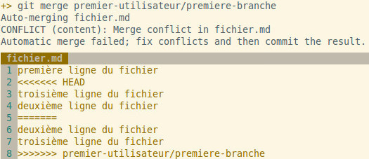
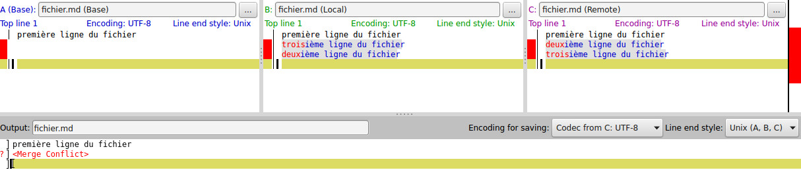

Découvrir Git simplement et rapidement
©Copyright Mathieu Provencher 2015
En quoi consiste Git?
Git est un système de gestion de versions de fichiers décentralisé permettant de garder en mémoire toutes les modifications apportées à des fichiers. C’est ainsi pratique lorsque vient le temps de gérer l’évolution d’un projet. Puisqu’il est conçu pour être fiable et soutenir un grand nombre de collaborateurs, il figure parmis les outils les plus populaires de sa catégorie.
Structure
Le présent document est structuré de façon à rendre la lecture et la compréhension de la technologie Git facile et accessible à tous. De l’installation à la collaboration, en passant par les conventions et l’utilisation de base, ce document vous aidera à tirer profit de cette technologie rapidement. Que vous travailliez sur votre ordinateur personnel à développer un logiciel simpliste ou que vous preniez part d’un réseau servant à développer un projet de grande envergure, les notions présentées seront en mesure de répondre à vos questions. Des hyperliens ont été insérés dans le document afin de se référer rapidement aux boîtes à outils ainsi qu'aux guides d'utilisation officiels des commandes.
Tout au long du texte, vous noterez la présence de plusieurs sous-titres. Ceux-ci ont pour but de diviser le texte de façon logique afin de rendre la lecture fluide et trouver rapidement l’information recherchée.
RecetteAtelier démontrant une procédure qui est décortiquée et expliquée au fur et à mesure. Il est important de les suivre afin de ne pas avoir de fichiers manquants. |
Boîte à outilsTableau présentant un assortiment de paramètres couramment utilisés pour certaines commandes. |
Git en imageDémonstration d'une image présentant un procédé ou un résultat. |
Trucs et astucesConseils pour manipuler Git avec aise. |
Commandes en vracListe de commandes qui peuvent être utilisées à l'occasion. Leur usage est simple et ne nécessite pas d'explications supplémentaires. |
Aller plus loinManipulations avancées ou moins courantes. |
Installation et configuration
Git est très simple à installer et configurer. Si l’on est munis d’un système d’exploitation faisant part de la famille Linux, il suffit d’inscrire la commande ‘sudo apt-get install git’ dans le terminal. Pour une station fonctionnant sous Mac OS, il faudra exécuter ‘brew install git’.
Si vous avez des interrogations sur la syntaxe d’une commande, vous pouvez à tout moment écrire ‘git help commande’ pour ainsi consulter son guide d’utilisation. Les sites tels que Git SCM ainsi que Atlassian sont bien conçus et pourront aussi vous dépanner rapidement et vous en apprendre davantage sur Git.
Passons maintenant à la configuration. Afin de pouvoir configurer votre nom ainsi que votre adresse de messagerie, tapez simplement les commandes suivantes dans le terminal:
git config --global user.name "Utilisateur"
git config --global user.email "utilisateur@gmail.com"
Dans le but de prévenir tout éventuel problème qui pourrait surgir lors de la conversion des sauts de ligne, il suffit d’entrer les commandes:
git config --global core.autocrlf input
git config --global core.safecrlf true
Vous pouvez maintenant exécuter la commande 'git var -l' qui dressera une liste des variables de votre environnement Git. Il est aussi possible de configurer l'éditeur par défaut, si vous avez des préférences.
Conventions
Lorsque l’on travail sur un projet qui prend de l’ampleur et comporte plusieurs versions, il est important de porter une attention toute particulière à la nomenclature qu’emprunte chaque modification. Chaque projet ou entreprise opte pour une nomenclature qui s’avère importante de respecter si nous tenons à ce que le développement soit simplifié pour nous et nos collaborateurs. Ici, nous avons un exemple de nomenclature:
extra
Le type est en réalité la nature de la modification. Voici une liste de types que vous pouvez utiliser lors de l'ajout de modifications à un projet:
fix : Correction d’un bug ou un problème
docs : Ajout ou amélioration de documentation
refac : Modification de code existant
test : Ajout ou amélioration de tests
La fonction est la partie du code dans laquelle la modification a été effectuée. Cela sert à retrouver plus facilement les modifications qui touchent une fonctionnalité en particulier.
Le sujet décrit explicitement et brièvement les modifications qui ont été apportées lors de votre commit.
La section extra sert à ajouter plus d’informations sur les modifications, au besoin.
Il en va de même pour les branches, que nous pouvons écrire sous la forme '
nom-utilisateur/correction-du-probleme-237'.
Intégration dans une entreprise
De nos jours, plusieurs plateformes web vous offrent la possibilité de gérer votre projet Git. Que ce soit pour le storage ou bien pour l'administration de votre projet de façon grahique, les options sont multiples. Chaque site offre des particularitées différentes qui sauront satisfaire vos attentes et ainsi ne pas risquer de perdre l'historique de votre projet. En voici quelques exemples, accompagnés d'une courte description:
GitHubTrès connu dans le monde du Open Source, GitHub est une plateforme très intéressante lorsque nous voulons développer et héberger un projet auquel tout le monde aura accès. Pour se munir d'un repository privé, il faudra débourser une somme d'argent négligeable. |
BitBucketOffrant la possibilité d'héberger jusqu'à 5 projets Git gratuitement, BitBucket est une plateforme qui donne une liberté d'esprit lorsque vient le temps de développer rapidement sans se soucier de la confidentialité. Il est possible d'avoir plus de repository qui seront ouvert à tout le monde. |
GitLabLe service GitLab se différencie par la possibilité de télécharger et administrer à 100% sa propre plateforme de gestion de fichiers. Ce qui est synonyme de liberté et de contrôle, sans oublier le point de vue confidentialité. La configuration est simple et permet d'utiliser des options avancées. |
De plus, les outils graphiques sont de plus en plus fiables et offrent la possibilité d'intégrer Git facilement dans une entreprise dans laquelle les employés désirent s'initier aux fonctions de base de Git. Il est toujours bon de se munir d'un outil de comparaison de fichiers qui nous aidera lorsqu'un problème fera son apparition.
Glossaire
Lors de l’apprentissage d’une nouvelle technologie, plusieurs termes surgissent. Il est préférable de connaître leur définition afin de bien comprendre ce document. À noter que certains termes sont des anglicismes et qu’il est mieux de ne pas les traduire par soucis de compréhensibilité.
Commit
Capture des modifications apportées au répertoire de travail.
HEAD
Pointeur qui fait référence au dernier commit d’une branche. HEAD^ est utilisé pour faire référence à l'avant-dernier commit, au même titre que HEAD~1. Il est donc possible d'écrire HEAD~4 pour faire référence au quatrième commit qui se trouve avant le pointeur HEAD actuel.
SHA
Signature digitale représentant un objet Git. Sa forme abbrégée est très utile afin de représenter un commit sans avoir besoin de tout écrire la chaîne de caractères au complet.
Repository
Fichiers et dossiers qui contiennent les informations permettant à Git de garder un historique du projet. Il est important de ne pas supprimer le dossier caché ‘.git’ se trouvant à la racine de votre projet car il est essentiel.
Index
Lieu de rassemblement des modifications apportées. C’est l’intermédiaire entre le répertoire de travail et le repository Git.
Branche
Espace de travail sur laquelle nous pouvons développer une fonctionnalité ou corriger un problème sans altérer les versions du projet fonctionnelles.
Apprivoiser Git
Il est important de savoir comment créer, modifier et comprendre un repository. Cette toute première section propose un atelier pouvant vous initier aux commandes de base.
Recette №1 : Commandes de base
| Nouvelle commande Git | Utilisation | Description |
|---|---|---|
$ mkdir projet-git && cd projet-git |
Création et déplacement dans le répertoire d'un nouveau projet pour expérimenter des commandes | |
| init | ||
$ git init |
Initialisation du repository Git | |
$ echo 'readme' > README.md |
Écriture de données dans un nouveau fichier | |
| add | ||
$ git add -A |
Ajout de toutes les modifications à l'index | |
| commit | ||
$ git commit -m 'feat(Setup): initialisation' |
Enregistrement des modifications en ajoutant un titre | |
$ git commit --amend -m 'feat(Setup): initialisation du repository' |
Modification du titre du dernier commit | |
| log | ||
$ git log |
Visualisation du rapport complet de commit | |
$ echo 'premiere-ligne' | tee -a premier-fichier.md deuxieme-fichier.md troisieme-fichier.md |
Écriture de données dans plusieurs fichiers | |
| status | ||
$ git status |
Visualisation des fichiers modifiés et ajoutés à l'index | |
$ git add premier-fichier.md |
Ajout du fichier 'premier-fichier.md' à l'index | |
$ git commit -m 'feat(PremiereRecette): ajout du premier fichier' |
Enregistrement des modifications en ajoutant un titre | |
| tag | ||
$ git tag -a v0.1 -m 'premier-tag' |
Création d'un identificateur de version | |
$ git add deuxieme-fichier.md |
Ajout du fichier 'deuxieme-fichier.md' à l'index | |
$ git commit -m 'feat(PremiereRecette): ajout du deuxieme fichier' |
Enregistrement des modifications en ajoutant un titre | |
$ git tag -a v0.2 -m 'deuxieme-tag' |
Création d'un identificateur de version | |
$ git tag -d v0.2 |
Suppression de l'identificateur de version | |
| clean | ||
$ git clean -n |
Montre les éléments qui seront supprimés si nous exécutons la prochaine commande | |
$ git clean -f |
Supprime les fichiers modifiés qui ne sont pas suivis par Git | |
$ echo 'ligne-ajoutee' >> premier-fichier.md |
Écriture de données dans le fichier 'premier-fichier.md' | |
$ git add premier-fichier.md |
Ajout du fichier 'premier-fichier.md' à l'index | |
$ git commit -m 'feat(PremiereRecette): ajout de ligne au premier fichier' |
Enregistrement des modifications en ajoutant un titre | |
$ git log --oneline |
Visualisation du rapport des commits avec le format abbrégé | |
| revert | ||
$ git revert HEAD~1 |
Retourne au pointeur HEAD~1 en ne modifiant pas l'historique ainsi que l'index | |
| whatchanged | ||
$ git whatchanged --oneline |
Visualisation des modifications apportées depuis le dernier commit | |
| reset | ||
$ git reset --hard SHA |
Restaure l'index et le répertoire de travail et change le pointeur HEAD au commit portant le SHA indiqué | |
| reflog | ||
$ git reflog |
Affichage des actions effectuées dans le repository | |
$ git whatchanged |
Visualisation des modifications apportées depuis le dernier commit | |
| show | ||
$ git show v0.1 |
Visualisation des modifications apportées à la v0.1 | |
$ git show HEAD^:premier-fichier.md |
Visualisation de l'état de premier-fichier.md à l'avant-dernier commit |
Trucs et astuces : le fichier .gitignore
Avant même de commencer à développer votre projet, assurez-vous de créer un fichier intitulé '.gitignore' afin de ne pas prendre en considération certains fichiers. Comme par exemple, si nous développons avec un framework ou bien notre projet contient beaucoup de fichiers de rapports, cette fonctionnalité a une utilité incontestable.
Il suffit d'y énumérer les fichiers et/ou les dossiers à exclure en les énumérant, ligne par ligne. Si nous créons un dossier, il ne sera pas enregistré dans l'index Git. Afin de pouvoir le prendre en considération, il suffit d'ajouter un fichier '.gitkeep' à l'intérieur de ce dossier. Sans oublier que nous pouvons précéder le fichier ou dossier d'un '!' dans le fichier '.gitignore'. Finalement, il est possible d'ignorer tous les fichiers qui ont une extension en particulier en inscrivant, comme par exemple, '*.php'.
Boîte à outils: la commande 'add'
La commande add sert à ajouter les fichiers à l'index de modifications Git.
| Syntaxe | Description |
|---|---|
$ git add . |
Ajoute à l'index seulement les fichiers ajoutés et modifiés. |
$ git add -u |
Ajoute à l'index seulement les fichiers modifiés et supprimés. |
$ git add -A |
Ajoute à l'index tous les fichiers ajoutés, modifiés et supprimés. |
$ git add *.php |
Ajoute à l'index tous les fichiers portant l'extension '.php'. |
Boîte à outils: la commande 'reset'
La commande reset sert à faire retourner le pointeur HEAD à un certain moment dans l'historique de modifications.
| Syntaxe | Description |
|---|---|
$ git reset --mixed SHA |
Restaure l'index sans affecter le répertoire de travail (action par défaut) et restaure le pointeur HEAD au commit portant le SHA spécifié. |
$ git reset --soft SHA |
Ne restaure pas l'index ni le répertoire de travail, mais restaure le pointeur HEAD au commit portant le SHA spécifié. |
$ git reset --hard SHA |
Restaure l'index et le répertoire de travail et change le pointeur HEAD au commit portant le SHA spécifié. |
$ git reset --hard HEAD |
Efface toutes les modifications effectuées depuis le dernier commit. |
Git en image
La commande reflog permet de visualiser toutes les actions qui ont été exécutées dans le repository. Vous pouvez voir ci-dessous que même si nous avons fait une erreur en faisant un 'git reset --hard', il sera toujours possible de retourner aux autres versions précédentes.
Trucs et astuces : checkout, reset et revert
Les trois commande checkout, reset et revert ont tous un point en commun: elles servent à enlever des modifications qui ont été apportées au repository. Puisqu'elles se ressemblent, il est facile de les mélanger. La commande checkout sert à changer de branche ou bien se déplacer dans un commit, en spécifiant son SHA. Il est aussi possible de supprimer les modifications apportées à un fichier. La commande reset sert à supprimer des modifications apportées au repository en retournant dans l'historique ou ignorer les modifications qui ne figurent pas dans un commit. Elle sert aussi à enlever un fichier de l'index Git, s'il a précédemment été ajouté. Revert, elle, sert à retourner dans l'historique, en créant un nouveau commit et ainsi ne pas altérer l'historique. Il est seulement possible d'utiliser cette commande sur un commit, et non pas sur un fichier.
Être structuré avec Git
Maintenant que notre premier contact avec Git est fait, nous sommes maintenant prêt à bien structurer notre repository afin d'accueillir toutes les nouvelles modifications que nous allons y apporter, sans se perdre dans les nombreux commit.
Recette №2 : Structurer le repository
| Nouvelle commande Git | Utilisation | Description |
|---|---|---|
| branch | ||
$ git branch premier-utilisateur/premiere-branche |
Création de la branche 'premier-utilisateur/premiere-branche' | |
| checkout | ||
$ git checkout premier-utilisateur/premiere-branche |
Déplacement dans la nouvelle branche 'premier-utilisateur/premiere-branche' | |
$ echo 'premiere-ligne' | tee -a premier-fichier.md deuxieme-fichier.md |
Écriture de données dans plusieurs fichiers | |
$ git add premier-fichier.md |
Ajout du fichier 'premier-fichier.md' à l'index | |
$ git commit -m 'feat(DeuxiemeRecette): ajout de premier-fichier' |
Enregistrement des modifications en ajoutant un titre | |
$ git add deuxieme-fichier.md |
Ajout du fichier 'deuxieme-fichier.md' à l'index | |
| stash | ||
$ git stash |
Enregistrement temporaire des modifications afin de changer de branche | |
$ git checkout -b premier-utilisateur/deuxieme-branche |
Création et déplacement dans la branche 'premier-utilisateur/deuxieme-branche' | |
$ git stash pop |
Restauration des modifications effectuées précédemment | |
$ git commit --all -m 'feat(DeuxiemeRecette): ajout de deuxieme-fichier' |
Enregistrement des modifications en ajoutant un titre | |
| rebase | ||
$ git rebase premier-utilisateur/premiere-branche |
Applique les changements de la branche 'premier-utilisateur/premiere-branche' sur la branche courante | |
$ echo 'troisieme-fichier' > troisieme-fichier.md |
Écriture de données dans un nouveau fichier | |
$ git add troisieme-fichier.md |
Ajout du fichier 'troisieme-fichier.md' à l'index | |
$ git commit -m 'feat(DeuxiemeRecette): ajout de troisieme-fichier' |
Enregistrement des modifications en ajoutant un titre | |
$ git checkout premier-utilisateur/premiere-branche |
Déplacement dans la branche 'premier-utilisateur/premiere-branche' | |
$ git log --graph --oneline --decorate --all |
Démonstration de l'arborescence sous forme de graphique | |
$ git reset --hard HEAD~2 |
Restaure l'index et le répertoire de travail et change le pointeur HEAD à l'indice HEAD~2 | |
$ git checkout master |
Déplacement dans la branche maîtresse | |
| cherry-pick | ||
$ git cherry-pick SHA |
Application des modifications apportées au commit portant le SHA indiqué se trouvant dans n'importe quelle branche | |
$ git branch premier-utilisateur/nouvelle-branche SHA |
Création de la branche 'premier-utilisateur/nouvelle-branche' qui contiendra les modifications apportées par le commit indiqué par le SHA |
Boîte à outils: la commande 'branch'
La commande branch sert à créer et manipuler les branches dans le repository. Ainsi, chaque fonctionnalité peut être développée sur une branche différente, ce qui est plus structuré. À noter que nous pouvons créer autant de branches que l'on désire.
| Syntaxe | Description |
|---|---|
$ git branch -a |
Liste les branches locales et celles sur le serveur. |
$ git branch utilisateur/premiere-fonctionnalite |
Ajoute la branche 'utilisateur/premiere-fonctionnalite' au repository. |
$ git branch -d utilisateur/premiere-fonctionnalite |
Supprime la branche 'utilisateur/premiere-fonctionnalite' du repository. |
$ git branch -D utilisateur/premiere-fonctionnalite |
Supprime la branche 'utilisateur/premiere-fonctionnalite' du repository en ignorant les possibles avertissements. |
$ git branch -m utilisateur/premiere-fonctionnalite utilisateur/correction-du-bug-237 |
Modifie le nom de la branche. |
Boîte à outils: la commande 'stash'
La commande stash emmagasine les modifications apportées à l'index dans un objet stash. Cela s'avère utile lorsque nous désirons changer de branche qui contient des modifications sans toutefois produire de commit
| Syntaxe | Description |
|---|---|
$ git stash list |
Liste tous les objets stash. |
$ git stash pop |
Applique les modification du dernier objet stash sur le répertoire courant. |
$ git stash pop stash@{3} |
Applique les modification de l'objet stash@{3} sur le répertoire courant. |
$ git stash clear |
Vide la liste d'objets stash. |
$ git stash drop stash@{1} |
Supprime l'objet stash@{1}. |
Git en image
La commande 'git log --graph --oneline --decorate --all' nous permet de visualiser les branches ainsi que les modifications présentes dans chacun d'entre elles. De plus, il est possible de situer facilement notre pointeur HEAD ainsi que nos versions de code identifiées par les tags.
Boîte à outils: la commande 'rebase'
La commande rebase sert à appliquer les modifications provenant d'une branche en direction d'une seconde branche. Elle modifie l'historique et il faut donc prendre nos précautions.
| Syntaxe | Description |
|---|---|
$ git rebase -i |
Lance le mode interactif. Permet entre autre de renommer, modifier et fusionner des commits. |
$ git rebase master utilisateur/premiere-fonctionnalite |
Applique les changements de la branche 'utilisateur/premiere-fonctionnalite' sur la branche maîtresse. |
$ git rebase --continue |
Continue l'opération en cours lorsqu'un conflit est survenu. |
$ git rebase --abort |
Annule l'opération en cours lorsqu'un conflit est survenu. |
Trucs et astuces : les dangers des commandes reset et rebase
Bien que d'apporter des modifications à notre historique peut être parfois avantageux afin de camoufler nos erreurs, il est risqué d'utiliser les commandes reset et rebase lorsque l'on collabore avec d'autres personnes qui ont déjà téléchargé la branche que nous voulons éditer. En effet, cela peut causer beaucoup de conflits. Il est souhaitable de ne pas en faire usage dans ces circonstances et plutôt s'assurer que tout ce que nous envoyons sur le serveur est bien structuré.
Un peu de collaboration
Maintenant que notre repository est structuré avec des branches, nous sommes maintenant prêt à accueillir de nouveaux collaborateurs au sein de notre projet. C'est ici que vient important de connaître les bases des commandes Git puisqu'il sera désormais possible de modifier les modifications ayant été apportées au serveur de gestion de code.
Recette №3 : Collaborer
| Nouvelle commande Git | Utilisation | Description |
|---|---|---|
$ cd .. && mkdir clone && cd clone && git clone --bare ../projet-git |
Copie du projet dans un repository de type 'bare' permettant le partage | |
| daemon | ||
$ git daemon --enable=receive-pack --verbose --export-all --base-path=. & |
Mise en marche d'un serveur temporaire de partage de repository (à exécuter dans un second terminal) | |
$ cd .. && mkdir collaboration-git && cd collaboration-git |
Création et déplacement dans le répertoire d'un nouveau projet | |
| clone | ||
$ git clone git://localhost/projet-git.git |
Copie locale d'un repository distant | |
$ cd projet-git |
Déplacement dans le projet cloné | |
$ echo 'autre-fichier' > autre-fichier.md |
Écriture de données dans un nouveau fichier | |
$ git add autre-fichier.md |
Ajout du fichier 'autre-fichier.md' à l'index | |
$ git commit -m 'feat(TroisiemeRecette): ajout de fichier' |
Enregistrement des modifications en ajoutant un titre | |
| pull | ||
$ git pull origin master |
Application des modifications de la branche maîtresse provenant du serveur | |
| push | ||
$ git push origin master |
Application des modifications de la branche maîtresse vers le serveur | |
$ git pull origin premier-utilisateur/premiere-branche |
Application des modifications de la branche 'premier-utilisateur/premiere-branche' provenant du serveur |
Commandes en vrac
Voici une liste de commandes faciles d'utilisation qui ne vous sont pas proposées dans les recettes, mais qui sont toutefois utiles.
shortlog: Visualisation de la progression du projet.
cherry: Liste des commits qui n'ont pas été transmis sur le serveur distant.
gc: Ménage et optimisation automatisée du repository Git.
Aller plus loin
Il vient à l'occasion le besoin de créer un projet Git dans lequel repose un second projet qui constitue en réalité une fonctionnalité connexe. C'est alors que la commande submodule s'avère utile afin d'éviter de mal structurer le repository.
La correction de conflits
Et vient maintenant les conflits! Et oui, il est inévitable que lorsque nous travaillons à l'aide d'un système de gestion de fichiers partagés par plusieurs développeurs, les conflits fassent surface. Il sera toutefois possible de réduire ce nombre de conflits lorsque vous aurez plus d'expérience et saurez comment bien structurer votre repository.
Recette №4 : Résolution de conflits
| Nouvelle commande Git | Utilisation | Description |
|---|---|---|
$ git checkout -b deuxieme-utilisateur/branche-collaboration |
Création et déplacement dans la branche 'deuxieme-utilisateur/branche-collaboration' | |
$ echo 'premiere-ligne' > fichier-collaboration.md |
Écriture de données dans un nouveau fichier | |
$ git add fichier-collaboration.md |
Ajout du fichier 'fichier-collaboration.md' à l'index | |
$ git commit -m 'feat(QuatriemeRecette): ajout de fichier de collaboration' |
Enregistrement des modifications en ajoutant un titre | |
$ git checkout master |
Déplacement dans la branche maîtresse du projet | |
$ git pull --rebase origin master |
Application des modifications de la branche maîtresse provenant du serveur en utilisant le procédé rebase | |
| merge | ||
$ git merge deuxieme-utilisateur/branche-collaboration |
Incorporation de la branche 'deuxieme-utilisateur/branche-collaboration' dans la branche courante, soit maîtresse | |
| diff | ||
$ git diff HEAD~1 HEAD |
Visualisation des différences entre le dernier et l'avant dernier commit | |
| difftool | ||
$ git difftool -t kdiff3 |
Ouverture de l'outil de comparaison de fichiers, s'il y a des différences | |
| mergetool | ||
$ git mergetool -t kdiff3 |
Ouverture de l'outil de gestion de conflits | |
$ git push origin master |
Application des modifications de la branche maîtresse vers le serveur | |
| blame | ||
$ git blame fichier-collaboration.md |
Démonstration des auteurs ayant altéré l'état du fichier 'fichier-collaboration.md' |
Boîte à outils: la commande 'blame'
La commande blame sert à montrer l'auteur d'une modification et surtout à quel moment dans l'historique elle a été comise.
| Syntaxe | Description |
|---|---|
$ git blame -n premier-fichier.md |
Montre le rapport en spécifiant les numéros de ligne. |
$ git blame -L 20,30 premier-fichier.md |
Montre seulement les lignes 20 à 30 du fichier. |
$ git blame premier-fichier.md v2.2 |
Montre le rapport en ignorant les modifications précédentes à la version 2.2. |
$ git blame --since=2.weeks |
Montre le rapport en ignorant les modifications ayant été apportées depuis plus de deux semaines. |
Git en image
Il n'est pas rare que lorsque vient le temps de joindre une branche quelconque à la branche maîtresse, il faut corriger des conflits puisqu'il y a des lignes qui ont été modifiées. Voici une capture d'écran démontrant ce à quoi le fichier problématique ressemblera après que Git aura tenté de résoudre le conflit, sans succès.
Les endroits où modifications ont eu lieu sont clairement indiquées et facilitent la résolution de conflits. Il suffit de supprimer les parties que nous n'avons pas de besoin, ajouter les fichiers à l'index et exécuter de nouveau la commande merge afin de continuer la procédure. Si nous voulons éviter de spécifier à chaque fois quelle branche contient la bonne version de code, il est possible d'utiliser les stratégies de résolution, en spécifiant soit l'option '--strategy=ours' ou '--strategy=theirs'.
Boîte à outils: la commande 'merge'
La commande merge sert à appliquer les modifications en provenance d'une autre branche.
| Syntaxe | Description |
|---|---|
$ git merge utilisateur/premiere-fonctionnalite |
Applique les modifications de la branche utilisateur/premiere-fonctionnalite sur la branche maîtresse. |
$ git merge --strategy=ours utilisateur/premiere-fonctionnalite |
Applique les modifications de la branche utilisateur/premiere-fonctionnalite sur la branche maîtresse en gardant les versions de cette dernière, lorsque conflit survient. |
$ git merge --strategy=theirs utilisateur/premiere-fonctionnalite |
Applique les modifications de la branche utilisateur/premiere-fonctionnalite sur la branche maîtresse en gardant les versions de la première, lorsque conflit survient. |
$ git merge --abort |
Annule l'opération d'application de modifications. |
Trucs et astuces : merge et rebase
Les commandes merge et rebase sont toutes deux utilisées afin d'incorporer les changements effectués dans une branche au sein d'une autre branche. Par contre, il est important de faire la différence entre les deux. En effet, merge ajoute les modifications d'une branche à la toute fin de la seconde branche alors que rebase, qui est à utiliser avec précaution, réécrit l'historique en incorporant les modifications. Cette seconde option permet de maintenir un historique plus clair, mais peut causer de sérieux problèmes lorsque nous travaillons avec des collaborateurs.
Aller plus loin
Il arrive parfois qu'un problème s'introduit dans notre projet et qu'il est difficile de cerner à partir de quel commit il s'est introduit. Afin d'accélérer le procédé d'investigation, une commande Git vient à notre rescousse. Elle se nomme bisect et itère de façon logique parmis nos modifications afin de trouver l'erreur. Il ne nous suffit plus que de spécifier à cet outil si le problème en question existe toujours ou n'a pas encore fait son apparition. Il est aussi possible de lui donner une tâche à exécuter automatiquement, question d'accélérer la manipulation.
Git en image
Les outils de comparaison de fichiers et de gestion de conflits peuvent simplifier l'entretien de votre repository Git. Voici une capture d'écran de l'outil kdiff3 qui se charge de vous indiquer les conflits et les régler les uns après les autres.
Boîte à outils: la commande 'bisect'
La commande bisect sert à déterminer à partir de quel commit un problème s'est introduit dans le projet.
| Syntaxe | Description |
|---|---|
$ git bisect start |
Débute l'investigation. |
$ git bisect good SHA |
Spécifie un commit qui ne contenait pas encore le problème. |
$ git bisect bad SHA |
Spécifie un commit qui contient le problème en question. |
$ git bisect good |
Spécifie que le présent commit n'a pas de problème. |
$ git bisect bad |
Spécifie que le présent commit a un problème. |
$ git bisect visualize |
Permet de visualiser avec un éditeur graphique. |
$ git bisect reset |
Met fin à l'opération en cours. |
Aller plus loin
Étant développé dans le but d'accélérer le développement d'un projet, Git nous offre plusieurs outils qui sont à notre disposition pour nous aider. Lorsque vient le temps de corriger un conflit suite à la liaison de deux branches, ne serait-ce pas pratique que d'enregistrer notre procédure? C'est ce que nous propose la fabuleuse commande rerere, qui nous permet de mémoriser nos corrections sous forme de macro pour ainsi les réutiliser lorsque bon nous semble.
De plus, les Git hooks nous permettent de faire rouler un script lorsqu'un évènement est déclenché. Comme par exemple, avant que les modifications soient envoyées au serveur ou bien à chaque fois que le serveur reçoit de nouvelles modifications.
Vous pouvez consulter le guide d'utilisation de Git afin de découvrir et mettre en pratique ces fonctionnalités.
Le mot de la fin
Et voilà! Nous avons fait le tour des commandes qui sont à votre disposition lorsque vous développez un projet avec Git et votre boîte à outils commence à être bien rempli. N'oubliez pas que vous pouvez à tout moment clôner un repository ou bien en initialiser un afin de tester des fonctionnalités que vous venez tout juste d'apprendre. Plus vous pratiquer, plus vous serez à l'aise et ça deviendra un réflexe pour vous que de créer une branche, corriger un conflit ou bien même de diagnostiquer l'état d'un repository Git.